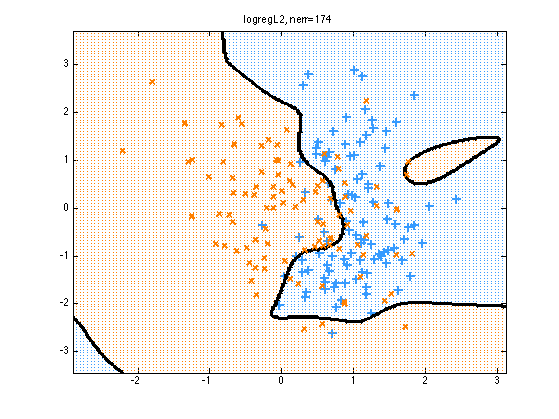
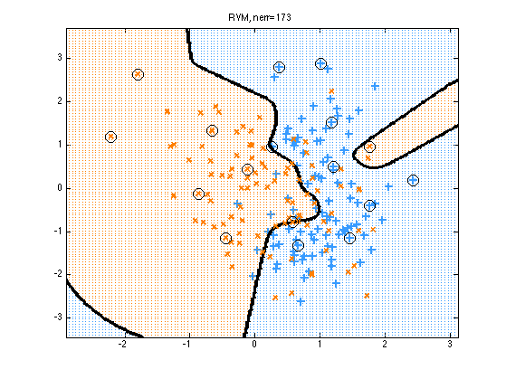
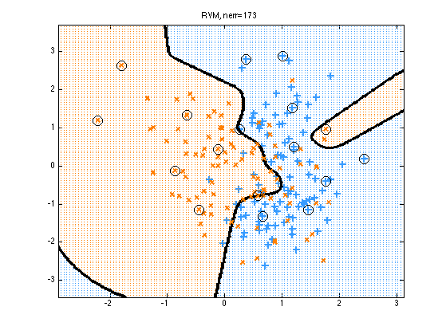

Contents
Compare SVM, RV and kernelized logreg on synthetic 2 class data in 2d
% This file is from pmtk3.googlecode.com
Load Data
Load synthetic data generated from a mixture of 2 Gaussians. Source: http://research.microsoft.com/~cmbishop/PRML/webdatasets/datasets.htm
See also hastieSvmLrDemo
loadData('bishop2class'); y = Y(:); %X = mkUnitVariance(centerCols(X));
Set up kernels
We pick hyperparameters that result in a pretty plot
rbfScale = 0.3; gamma = 1/(2*rbfScale^2); kernelFn = @kernelRbfSigma; Ktrain = kernelFn(X, X, rbfScale);
Train and test
if svmInstalled Nmethods = 4; else Nmethods = 3; end for method=1:Nmethods switch method case 1, logregArgs.lambda = 5; logregArgs.regType = 'L2'; logregArgs.preproc.kernelFn = @(X1, X2)kernelRbfSigma(X1, X2, rbfScale); model = logregFit(X, y, logregArgs); fname = 'logregL2'; predictFn = @(Xtest) logregPredict(model, Xtest); case 2, logregArgs.lambda = 1; logregArgs.regType = 'L1'; logregArgs.preproc.kernelFn = @(X1, X2)kernelRbfSigma(X1, X2, rbfScale); model = logregFit(X, y, logregArgs); SV = (abs(model.w) > 1e-5); fname = 'logregL1'; predictFn = @(Xtest) logregPredict(model, Xtest); case 3, fname = 'RVM'; model = rvmFit(X, y, 'kernelFn', @(X1,X2) kernelFn(X1,X2,rbfScale)); predictFn = @(Xtest) rvmPredict(model, Xtest); SV = model.Relevant; case 4 %C = 1/lambda; C = 2.^linspace(-5,5,10) model = svmFit(X, y, 'C', C, 'kernel', 'rbf', ... 'kernelParam', gamma,'fitFn', @svmlightFit); fname = 'SVM'; predictFn = @(Xtest) svmPredict(model, Xtest); SV = model.svi; end yhat = predictFn(X); nerr = sum(yhat ~= convertLabelsToPM1(y)); %nerr = 0; % sum(yhat ~= y); % Plot results plotDecisionBoundary(X, y, predictFn, 'symbols', '+x'); if method > 1 plot(X(SV,1), X(SV,2), 'ok', 'linewidth', 1.5, 'markersize', 12); end title(sprintf('%s, nerr=%d', fname, nerr)) printPmtkFigure(sprintf('kernelBinaryClassifDemo%s', fname)) end
 
